Luzon, the largest island in the Philippines, is surrounded by several bodies of water including the West Philippine Sea and Sibuyan Sea. This geographical advantage contributes to its rich marine biodiversity, hosting hundreds of fish species that are both economically and ecologically important.
The waters around Luzon are home to various habitats including coral reefs, mangroves, and seagrass beds, which support diverse fish populations. From the deep-sea fishes of Batanes to the freshwater species of Laguna de Bay, Luzon offers a fascinating glimpse into the Philippines' aquatic treasures.
The Ilocos Region, located in the northwestern part of Luzon, is known for its rich coastal waters that support both artisanal and commercial fishing activities.
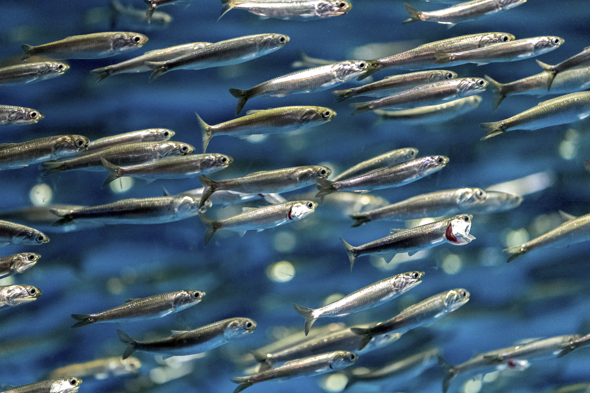
Small but economically important, dilis is often dried and used as a condiment or side dish.
Location: Pangasinan coastline
A staple fish in Filipino diets, known locally as "Galunggong," and a significant catch in many parts of the Philippines, including the Ilocos Region.
Location: Coastal waters of the Ilocos Region
An important pelagic tuna species commonly caught in the waters off Luzon, including the Ilocos coast.
Location: Offshore waters of the Ilocos Region
High-value reef fish, known locally as "Lapu-Lapu," found in the coral reefs and rocky areas along the Ilocos coast.
Location: Coral reefs and rocky areas off the Ilocos coast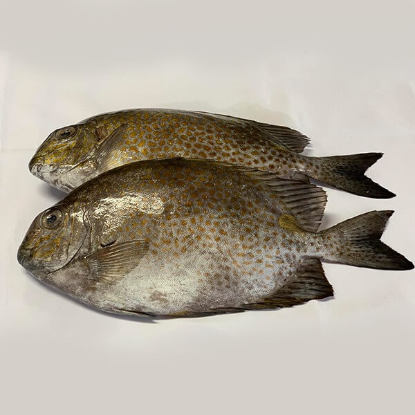
A popular fish in Ilocano cuisine, often prepared as kilawin (ceviche) or inabraw (fish soup).
Location: Ilocos Norte, Ilocos Sur
Commercially important reef fish, known locally as "Maya-Maya" or other names, inhabiting the reefs off the Ilocos coast.
Location: Coral reefs off the Ilocos coast
Popular food and game fish found in the coastal waters of the Ilocos Region.
Location: Coastal waters of the Ilocos Region
Another valuable tuna species found in the broader Philippine waters, including areas accessible to Ilocano fishers.
Location: Offshore waters accessible from the Ilocos Region
Widely farmed in the freshwater bodies of the region, tilapia is an important source of protein for local communities.
Location: Paoay Lake, La UnionCagayan Valley is blessed with the Cagayan River, the longest river in the Philippines, as well as coastal areas facing the Pacific Ocean. This region is known for its diverse freshwater and marine fish species.

Smaller mackerel species that are likely present in the coastal and offshore waters.
Location: Coastal waters of Ballesteros (Cagayan) and Ivana (Batanes)
Colorful marine angelfish known for their flattened bodies and graceful movements.
Location: Coral gardens near Piat (Cagayan) and Basco’s reef zones (Batanes)
Fish with enlarged pectoral fins that allow them to glide above the water’s surface.
Location: Coastal waters off Pamplona (Cagayan) and offshore Basco (Batanes)
Small, schooling fish often found near the coast, used in various culinary preparations. Also known as Tiki-Tiki/Bolinao.
Location: Coastal waters off Cagayan and Batanes
A fast-growing and colorful pelagic fish found in tropical and subtropical surface waters.
Location: Offshore waters around Palaui Island (Cagayan) and Sabtang Channel (Batanes)
Reef-associated fish, highly valued for their culinary qualities.
Location: Coral reefs around Claveria (Cagayan) and Sabtang Island (Batanes)
A large and majestic billfish, a prized game fish found in the open ocean.
Location: Deep oceanic waters east of Sta. Ana (Cagayan) and southeast of Basco (Batanes)
Commercially important reef fish with firm, flavorful flesh.
Location: Reef areas off Santa Praxedes (Cagayan) and near Mahatao (Batanes)
Herbivorous fish with beak-like mouths, important for controlling algae on reefs.
Location: Coral reef flats off Abulug (Cagayan) and Diura Fishing Village (Batanes)
A billfish characterized by its prominent sail-like dorsal fin, inhabiting pelagic waters.
Location: Open sea off Gonzaga (Cagayan) and Mavulis Island (Batanes)
Small, often brightly colored reef fish with diverse patterns.
Location: Coral-rich zones of Buguey Lagoon (Cagayan) and Marlboro Hills reefs (Batanes)
A migratory pelagic tuna, often found schooling with other tuna species in the open ocean.
Location: Deep offshore areas near Calayan Island (Cagayan) and Sabtang (Batanes)
Active predatory fish often associated with reefs and coastal areas.
Location: Reefs and rocky coasts off Camiguin Island (Cagayan) and Ivana (Batanes)
A migratory pelagic tuna species highly valued for its meat, found in the open waters off Cagayan and Batanes.
Location: Offshore waters of Sta. Ana (Cagayan) and Itbayat (Batanes)
Small, schooling oily fish found in coastal waters, important for local fisheries.
Location: Coastal waters of Ballesteros (Cagayan) and Sabtang Island (Batanes)
A large mackerel species known for its firm texture and rich flavor, inhabiting pelagic waters.
Location: Offshore waters of Buguey Bay (Cagayan) and near Itbayat Island (Batanes)
A smaller tuna species commonly found in tropical and subtropical waters.
Location: Pelagic zones off Aparri (Cagayan) and around Basco (Batanes)Central Luzon is home to Manila Bay and several important aquaculture areas, including the fishponds of Pampanga and Bulacan.

A common medium-sized mackerel found in schools, important for local consumption and commercial fisheries in the region. Also known as Mackerel or Salay-Salay.
Location: Manila Bay, West Philippine Sea (off the coast of Central Luzon)
The most important cultured fish in the Philippines, with Pampanga and Bulacan being major producers.
Location: Pampanga, Bulacan
The world's largest fish, known for its gentle nature and filter-feeding habits. While sightings are less frequent than in areas like Donsol or Cebu, they can occasionally be observed in the open waters off Central Luzon during their migrations.
Location: Offshore waters of Central Luzon (West Philippine Sea)
Small, slender fish often used in local cuisine for their distinct flavor. They form large schools and are caught using various methods. Also known as Dilis or Tiki-Tiki.
Location: Manila Bay, coastal waters of Central Luzon
A group of high-value reef fish prized for their firm, white flesh. Various species can be found in the coral reefs and rocky areas along the coast.
Location: Coastal areas and reefs of Central Luzon (e.g., Zambales, Bataan)
Another group of commercially important reef fish known for their excellent taste and texture. Different snapper species inhabit the waters off Central Luzon.
Location: Coastal areas and reefs of Central Luzon (e.g., Zambales, Bataan)
Endangered marine reptiles that nest on some beaches in Central Luzon and forage in its coastal waters. They play a crucial role in marine ecosystems.
Location: Coastal waters and nesting beaches of Central Luzon (e.g., Zambales, Bataan)
Small, oily schooling fish that are a vital part of the marine food web and are commercially important. Often caught in large quantities. Also known as Sardines.
Location: West Philippine Sea (off the coast of Central Luzon), Manila BayCagayan Valley is blessed with the Cagayan River, the longest river in the Philippines, as well as coastal areas facing the Pacific Ocean. This region is known for its diverse freshwater and marine fish species.
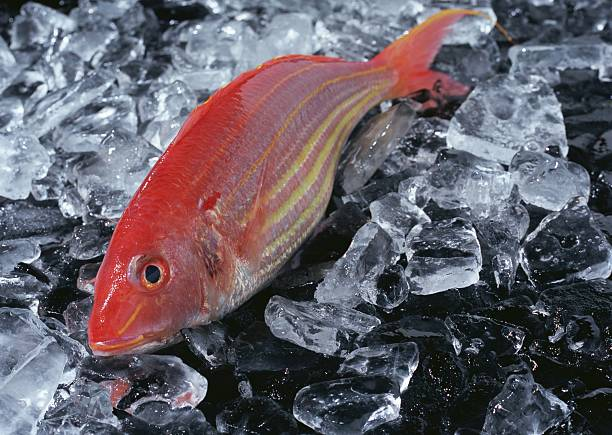
Small, pinkish fish with sweet-tasting meat, commonly found in coastal fishing grounds.
Location: Shelf areas of Batangas and Quezon coasts.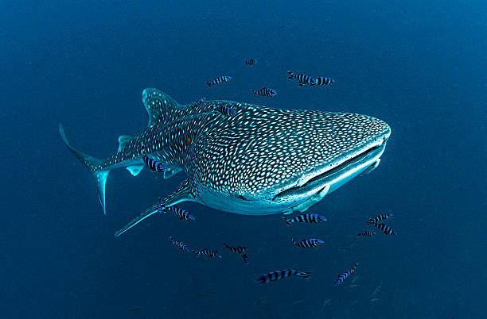
The world's largest fish, known for its gentle nature. While not a permanent resident, whale sharks are known to visit the waters off Quezon and Batangas during their migrations, attracting researchers and tourists.
Location: Offshore waters of Quezon and Batangas during migration periods.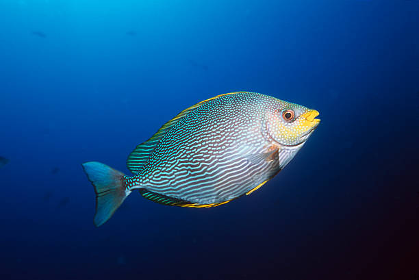
A commercially important rabbitfish species often found in seagrass beds and coral reef areas. It's a popular food fish in coastal communities.
Location: Coastal waters of Batangas, especially areas with seagrass and shallow reefs.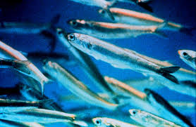
Small, schooling fish found near the coast, often used for fish paste and other culinary purposes.
Location: Coastal waters of Cavite, Batangas, and Quezon, including Manila Bay.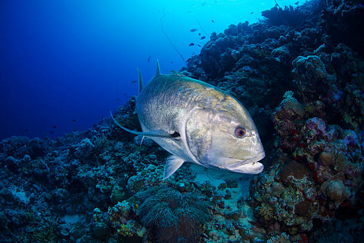
A prized game fish found in Taal Lake, Batangas, known for its delicious meat and fighting spirit. It's the same species as the marine Giant Trevally but has adapted to freshwater.
Location: Taal Lake, Batangas (Note: A freshwater adaptation of a marine species, iconic to Taal Lake)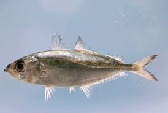
A schooling pelagic fish often found in coastal waters and around reefs. It's an important small-scale fishery resource.
Location: Coastal waters of Batangas and Quezon.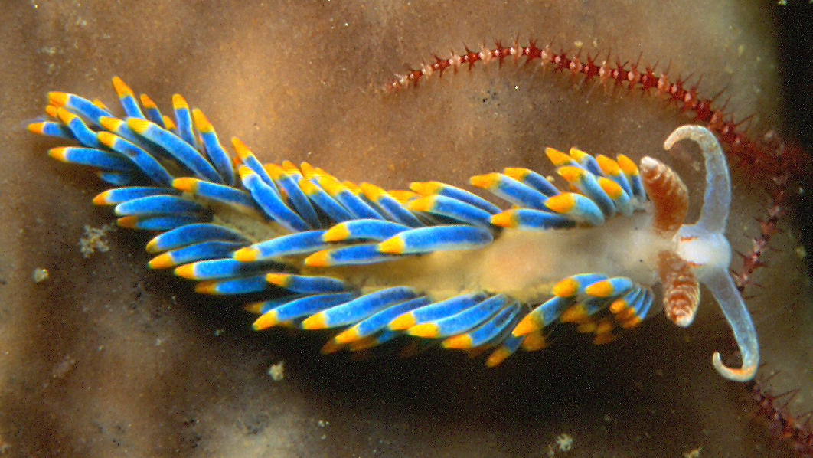
The Anilao area in Batangas is world-renowned for its high diversity of colorful nudibranchs (sea slugs). These small, often vibrant creatures are a major attraction for scuba divers and underwater photographers.
Location: Coral reefs of Anilao, Batangas.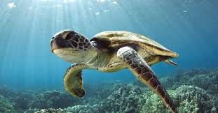
These majestic reptiles nest on the beaches of CALABARZON, particularly in Quezon and parts of Batangas. They are important for marine ecosystems and are a focus of conservation efforts.
Location: Coastal nesting beaches of Quezon and Batangas.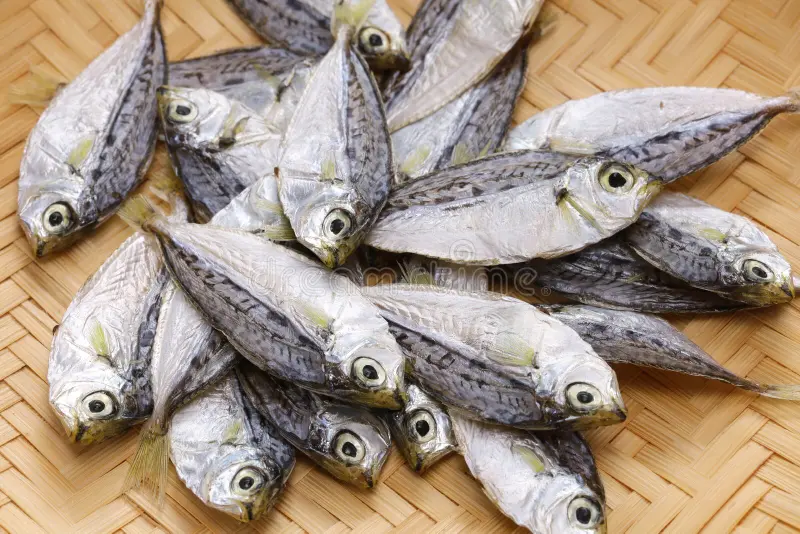
Small, silvery fish with protrusible mouths, common in shallow coastal waters and estuaries, including Manila Bay and other parts of CALABARZON.
Location: Manila Bay, coastal estuaries and shallow waters of Cavite, Batangas, and Quezon.
Large bivalve mollusks found in the coral reefs of Batangas and Quezon. They are ecologically important and can be quite striking in appearance.
Location: Coral reefs of Batangas and Quezon.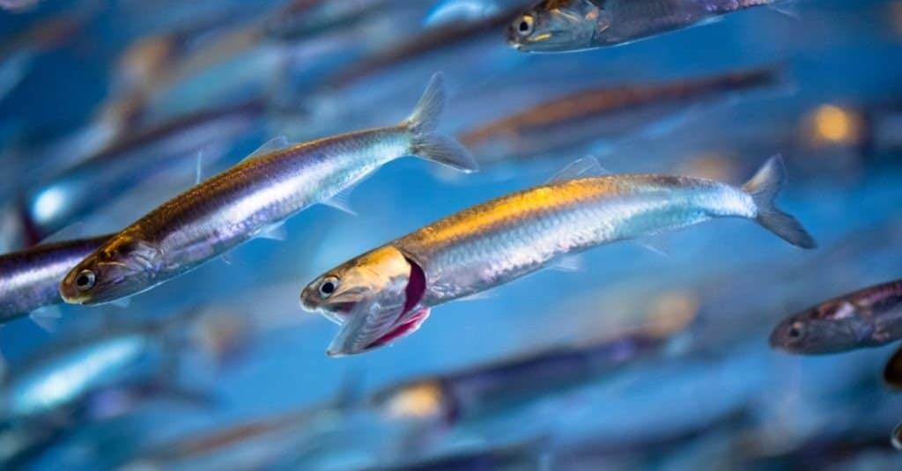
A small freshwater sardine endemic to Taal Lake in Batangas. It holds cultural and ecological significance as the only freshwater sardine in the world.
Location: Taal Lake, Batangas (Note: While primarily freshwater, its unique nature makes it iconic to the region)Cagayan Valley is blessed with the Cagayan River, the longest river in the Philippines, as well as coastal areas facing the Pacific Ocean. This region is known for its diverse freshwater and marine fish species.

While sometimes considered a threat to coral reefs in high densities, it is a native species and a significant part of the ecosystem. Its presence is notable in the extensive reefs of MIMAROPA.
Location: Coral reefs throughout MIMAROPA.
The largest fish in the world, these gentle giants filter-feed on plankton. They are known to aggregate in certain areas of the Philippines, including waters accessible from MIMAROPA.
Location: Open waters off Palawan and potentially other parts of MIMAROPA during migration periods.
A popular breakfast fish, often dried, abundant in the shallow waters around Marinduque and Mindoro, associated with seagrass beds and reefs.
Location: Shallow waters around Marinduque and Mindoro.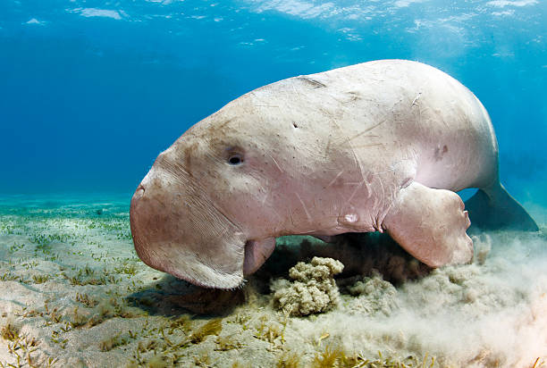
A gentle, herbivorous marine mammal that grazes on seagrass beds. Palawan is a significant habitat for this vulnerable species in the Philippines.
Location: Seagrass beds around Palawan, as well as parts of Mindoro and Romblon.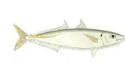
A staple fish in Filipino diets, caught in various parts of MIMAROPA.
Location: Coastal waters throughout MIMAROPA.
A large sea turtle species that feeds on seagrass and algae. MIMAROPA hosts important nesting sites and foraging grounds for green sea turtles.
Location: Nesting beaches and coastal waters of Palawan, Mindoro (e.g., Sablayan), and other islands in the region.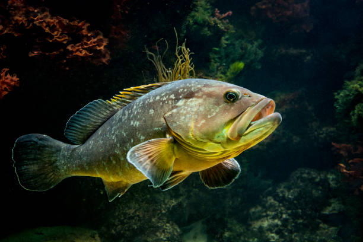
High-value reef fish prized for their firm, white flesh, abundant in the extensive coral reefs of Palawan and other islands in MIMAROPA.
Location: Coral reefs throughout Palawan, Mindoro, Marinduque, and Romblon.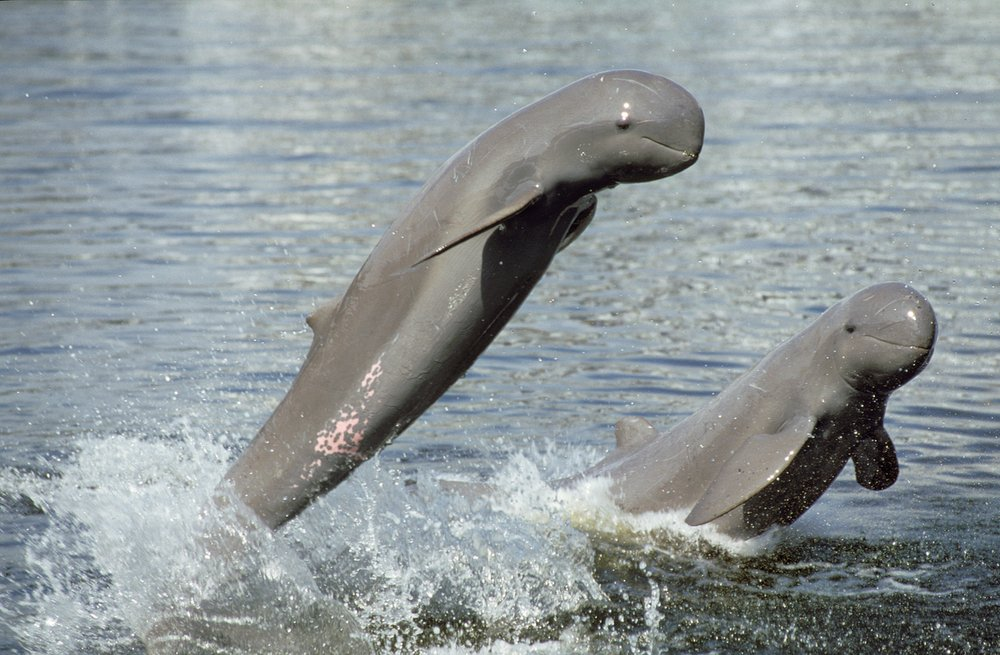
A small, toothed whale found in coastal areas and estuaries. While not strictly marine, they inhabit brackish waters connected to the sea. A population is known to exist in Malampaya Sound, Palawan.
Location: Malampaya Sound, Palawan.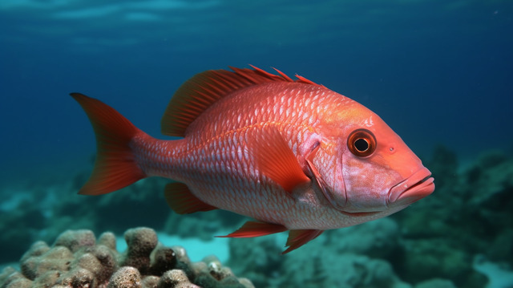
Premium fish with firm white flesh, commonly found in the waters around Palawan and Romblon, associated with reefs and deeper fishing grounds.
Location: Waters around Palawan and Romblon.
Graceful filter-feeding rays often seen gliding through the water. They are known to frequent reef areas in Palawan.
Location: Reefs and open waters around Palawan.
A critically endangered sea turtle with a distinctive hooked beak, often found in coral reef areas feeding on sponges and other invertebrates.
Location: Coral reefs throughout Palawan, Romblon, and other parts of MIMAROPA.
The largest living bivalve mollusk, found in coral reefs. Palawan is known for its populations of giant clams, some of which are part of conservation efforts.
Location: Coral reefs of Palawan and other islands in MIMAROPA.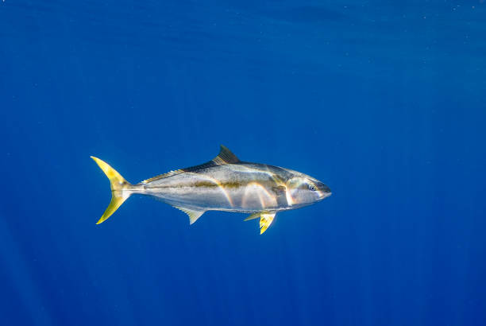
Commercially important pelagic fish found in the waters of MIMAROPA.
Location: Coastal and offshore waters of MIMAROPA.
A larger mackerel species favored for its firm texture and rich flavor.
Location: Waters around Palawan and Romblon.Cagayan Valley is blessed with the Cagayan River, the longest river in the Philippines, as well as coastal areas facing the Pacific Ocean. This region is known for its diverse freshwater and marine fish species.
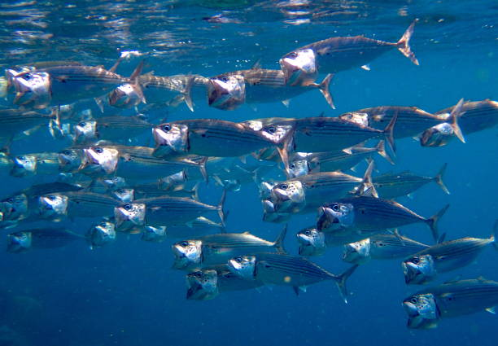
A staple in wet markets, commonly grilled or fried. Recognized for its affordability and rich flavor.
Location: Albay coast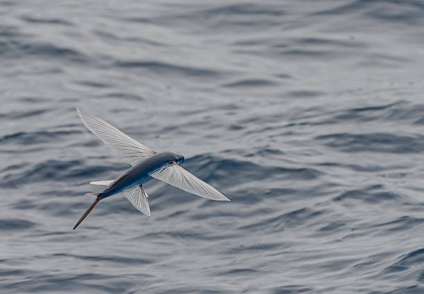
Known for gliding above the water surface, this fish is unique to deeper open waters and caught near the Sulu Sea and parts of eastern Bicol.
Location: Eastern Bicol Coast (Sorsogon, Albay)
A common market fish in Bicol with a pinkish hue and mild, sweet-tasting meat, frequently used in soups or grilled dishes..
Location: Sorsogon Bay, Albay Gulf
The world's largest fish, a gentle giant filter-feeder that aggregates in significant numbers in Donsol, Sorsogon, making it a globally renowned site for interaction.
Location: Donsol, Sorsogon
A popular breakfast fish, often dried and paired with vinegar or garlic rice. Found in shallow coastal waters and coral reefs.
Location: Sorsogon, Albay
A critically endangered dolphin species that inhabits coastal waters and estuaries. While their presence might be less widely known than whale sharks, they have been reported in certain areas of the Philippines
Location: Coastal estuaries and waters of the Bicol region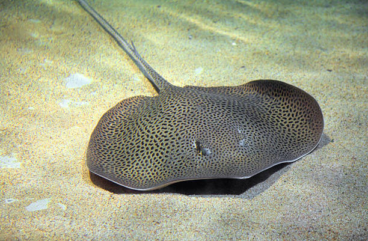
Large, graceful filter-feeding rays known for their wing-like pectoral fins. They are often sighted in the waters around the Bicol region, including near Ticao Island.
Location: Waters off Ticao Island (Masbate, often associated with the Bicol region), coastal areas of Albay and Sorsogon.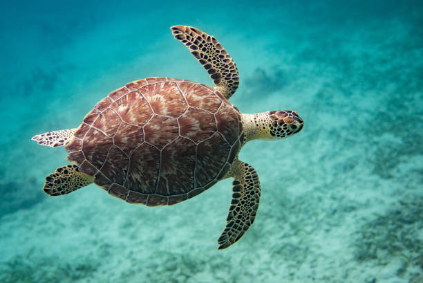
Endangered marine reptiles that nest on the beaches and forage in the seagrass beds and coral reefs of the Bicol region.
Location: Nesting beaches and coastal waters of Albay and Sorsogon.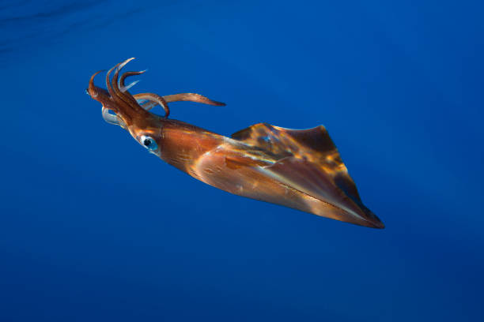
A widely consumed cephalopod in the region, often grilled or used in adobo. Actively fished in the deeper parts of the Bicol seas.
Location: Albay Gulf, Sorsogon waters
Known as the world's smallest commercially harvested fish, this tiny species is endemic to Lake Buhi in Camarines Sur and is considered a delicacy.
Location: Lake Buhi, Camarines Sur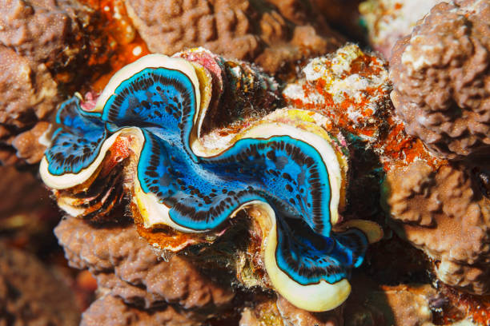
Large bivalve mollusks that inhabit coral reefs. Several species can be found in the reef ecosystems of the Bicol region, some of which are endangered.
Location: Coral reefs of Albay and Sorsogon.
Small, oily fish that often swim in large schools. They are a significant part of the marine food web and are widely consumed, often canned.
Location: Aklan, Antique, Leyte, Samar, Manila Bay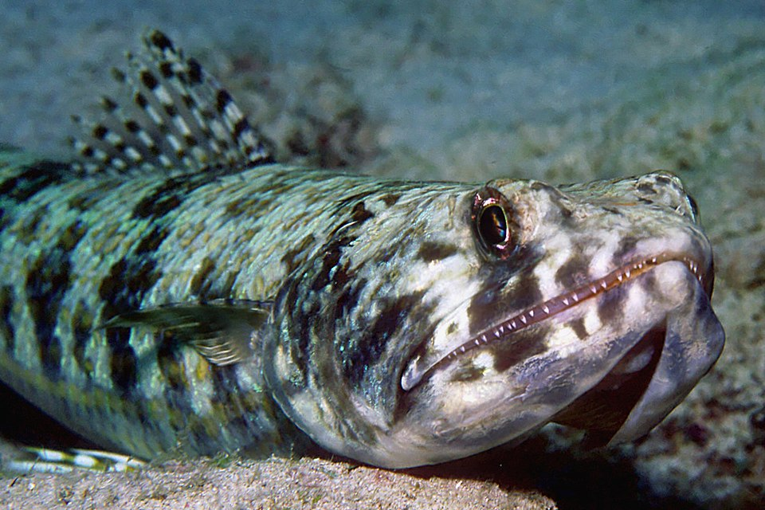
Tiny schooling fish widely used in making bagoong or dried fish products. Common in coastal Bicol towns.
Location: Sorsogon, Camarines Sur..jpg)
A medium-sized tuna species that’s important to regional fisheries. Known for its strong flavor and is often used in local dishes like sinaing or paksiw.
Location: Lagonoy Gulf, AlbayCagayan Valley is blessed with the Cagayan River, the longest river in the Philippines, as well as coastal areas facing the Pacific Ocean. This region is known for its diverse freshwater and marine fish species.

A common fish in Metro Manila markets, often sourced from nearby provinces but also caught in Manila Bay. Also known as Mackerel or Salay-Salay.
Location: Manila Bay, Northern Samar, Eastern Samar, Davao Gulf.jpg)
The most important cultured fish in the Philippines. Metro Manila is a major market for Bangus, sourced from Pampanga and Bulacan.
Location: Pampanga, Bulacan, Cebu, Bohol, Leyte, Samar, Metro Manila (markets)
Known for its vibrant colors and delicate flavor, often sold in wet markets in Metro Manila and cooked in sinigang or fried.
Location: Manila Bay, Southern Luzon, Visayas
Very small, salty fish usually dried and eaten as snacks or side dishes with rice. A staple in markets and households in NCR.
Location: Manila Bay, various coastal areas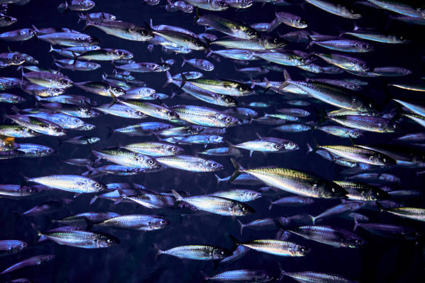
A smaller species of mackerel commonly found in tropical waters. It's a popular and affordable food fish in the Philippines. Also known as Matambaka (Mackerel Scad).
Location: Leyte, Samar, Misamis Oriental, Camiguin, Manila Bay
Cephalopods with elongated bodies, large eyes, and ten arms. A popular seafood enjoyed grilled, fried, or stuffed.
Location: Leyte Gulf, Eastern Samar, Manila Bay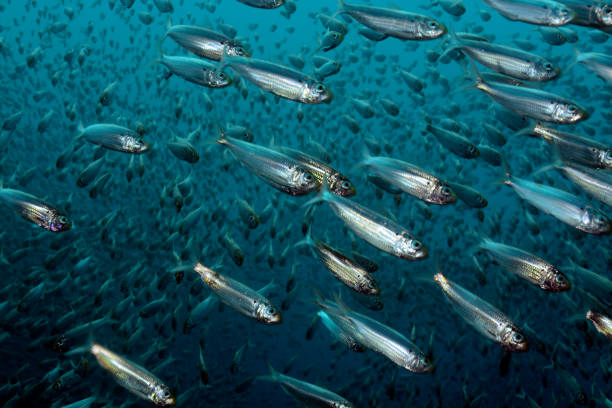
Small, oily fish that often swim in large schools. They are a significant part of the marine food web and are widely consumed, often canned.
Location: Aklan, Antique, Leyte, Samar, Manila Bay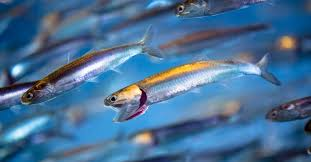
Small, schooling fish with a salty and umami flavor. They are often used in sauces, pastes, or eaten whole. Also known as Bolinao.
Location: Leyte, Samar, Iligan Bay, Manila Bay
Another farmed fish that's widely available in Metro Manila markets, tilapia is an affordable source of protein for many urban dwellers. Widely farmed in various regions.
Location: Metro Manila (farmed), Ambuklao Dam, Baguio City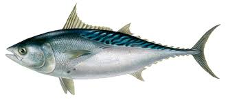
A medium-sized tuna species that's commercially important in the region. Often caught in coastal waters and sold in wet markets. Also known as Skipjack Tuna.
Location: Lagonoy Gulf, Manila Bay, Bohol, Celebes SeaCagayan Valley is blessed with the Cagayan River, the longest river in the Philippines, as well as coastal areas facing the Pacific Ocean. This region is known for its diverse freshwater and marine fish species.
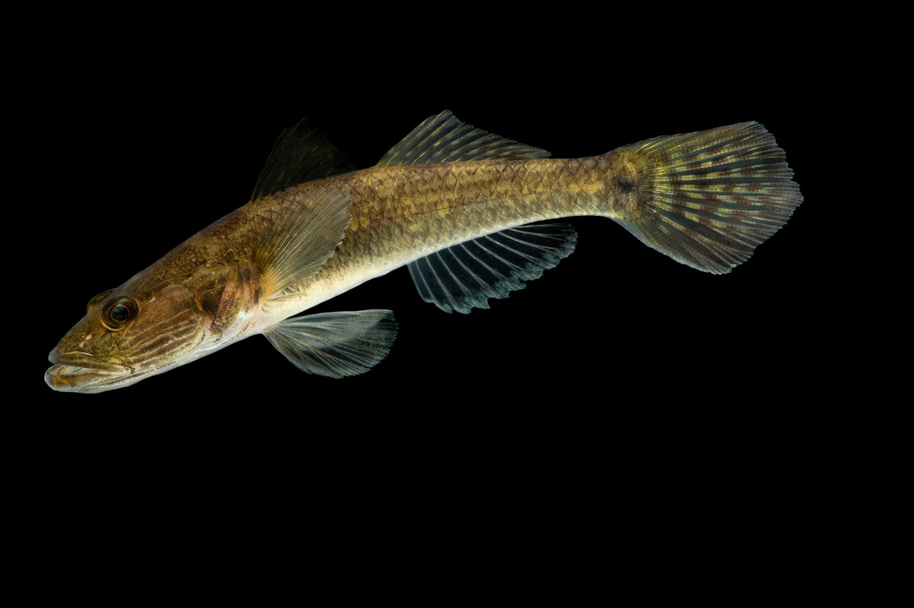
Small native gobies that inhabit mountain streams and rivers. They are part of the local food tradition in remote Cordilleran towns.
Location: Abra, Ifugao, Benguet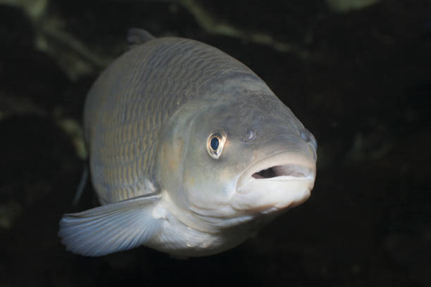
Introduced to the Philippines, this freshwater fish is now common in the rivers and lakes of the Cordillera region. Also known as Tëmaginting (Silver Carp).
Location: Chico River, Mountain Province, Maguindanao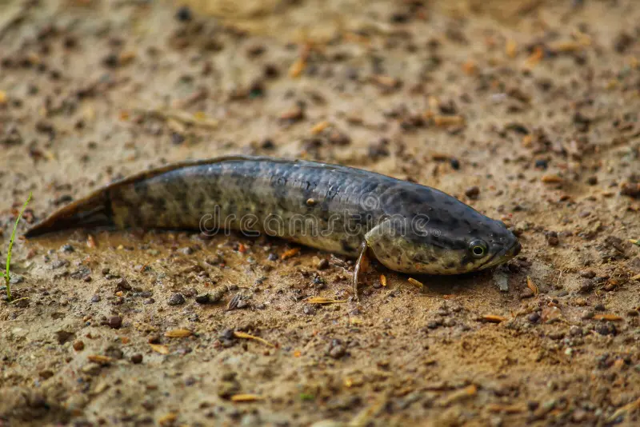
A resilient freshwater species found in rice fields and swamps. Valued for its ability to survive in low-oxygen environments.
Location: Abra River, Kalinga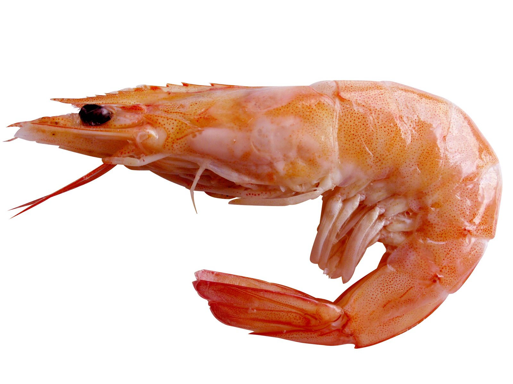
These river prawns are common in clean, flowing waters. They are often caught by hand or with bamboo traps.
Location: Abra, Apayao, Mountain Province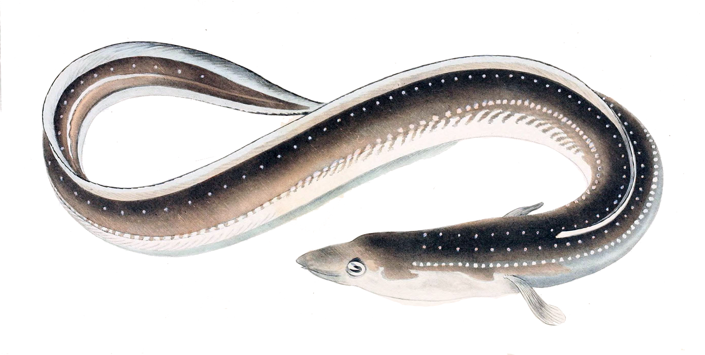
Freshwater eels that migrate between rivers and the sea. Considered a delicacy in some upland Cordillera towns.
Location: Kalinga, Abra River tributaries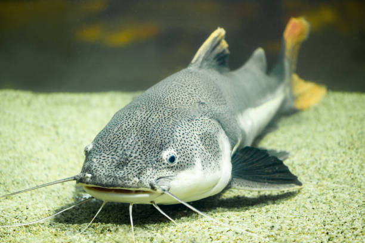
A native catfish species that thrives in river systems of the Cordillera. Often cooked in local sour stews.
Location: Chico River, Apayao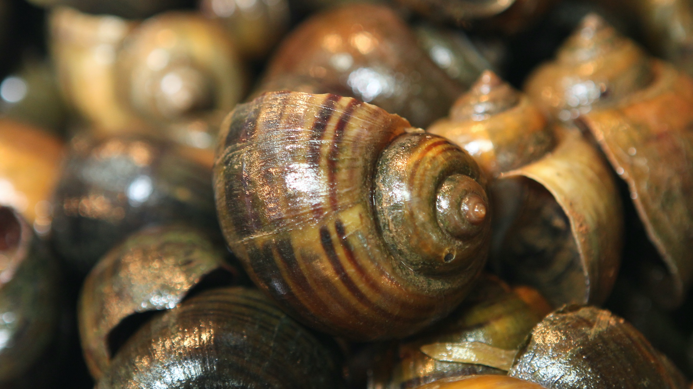
While often considered a pest in rice fields, kuhol is also harvested as a food source in the region and cooked in coconut milk.
Location: Rice fields and waterways in Kalinga and Ifugao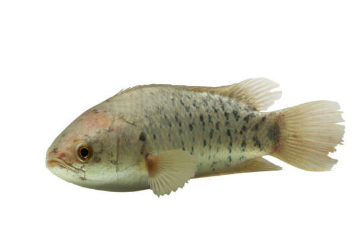
A hardy freshwater fish that can breathe air and survive out of water temporarily. Often caught in paddies and creeks.
Location: Mountain Province, Ifugao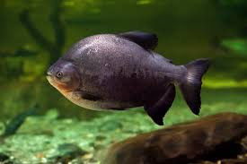
A South American species introduced to Philippine aquaculture. Known for its fast growth and adaptability to upland fishponds.
Location: Aquaculture sites in Benguet and Ifugao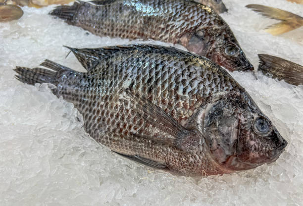
A widely farmed freshwater fish in Ambuklao Dam and nearby areas. Known for being a low-cost protein source in local communities.
Location: Ambuklao Dam, Baguio City